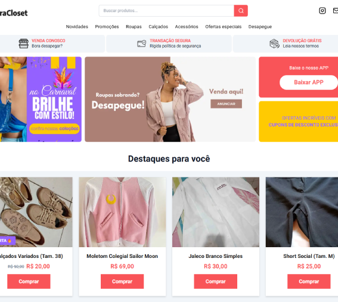
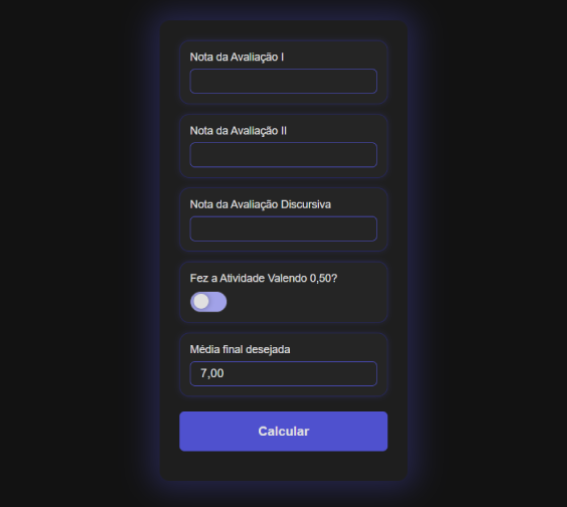

Meus Projetos
-

Jogo: Mario vs Bolsolula
Um jogo estilo jumper, desenvolvido com HTML, CSS e JavaScript. um dos primeiros projetos que desenvolvi com um tutorial, e depois de um tempo, com mais conhecimento, eu refiz e adicionei diversas novas funcionalidades, como barra de vida, novos efeitos de animação, diversos obstáculos, dentre outras.
-
E-commerce: BarraCloset
Um e-commerce de brechó, desenvolvido com Next.js. O site tem responsividade, e foi desenvolvido com o intuito de praticar e aprender Next.js, possuindo algumas funcionalidades básicas de um e-commerce e pensado de forma a ter uma fácil manutenção, sendo aberto a adição de melhorias e funcionalidades de forma simples.
 -
Calculadora de Notas
Este projeto sirgiu a partir de dúvidas de colegas que frequentemente perguntam "Quanto eu preciso tirar na prova presencial?". Então eu criei essa solução simplificadora que com base nas outras notas mostra quanto o aluno precisa tirar na última prova para passar.
 -
Conto Interativo
Um pequeno conto com elementos de RPG onde o usuário pode interagir com o livro e realizar escolhas referentes à história. A partir disso os textos são gerados dinamicamente acessando-se, via jQuery, arquivos externos em formato txt contendo o conteúdo da história.

-
Smartphone Interativo
Este projeto, desenvolvido em HTML, CSS e JavaScript, consiste em um smartphone com algumas funcionalidades visuais básicas como bloquear e desbloquear tela, alterar o volume, ativar e desativar funções como wifi, bluetooth, dados móveis etc. Além de trazer data e hora atualizadas.